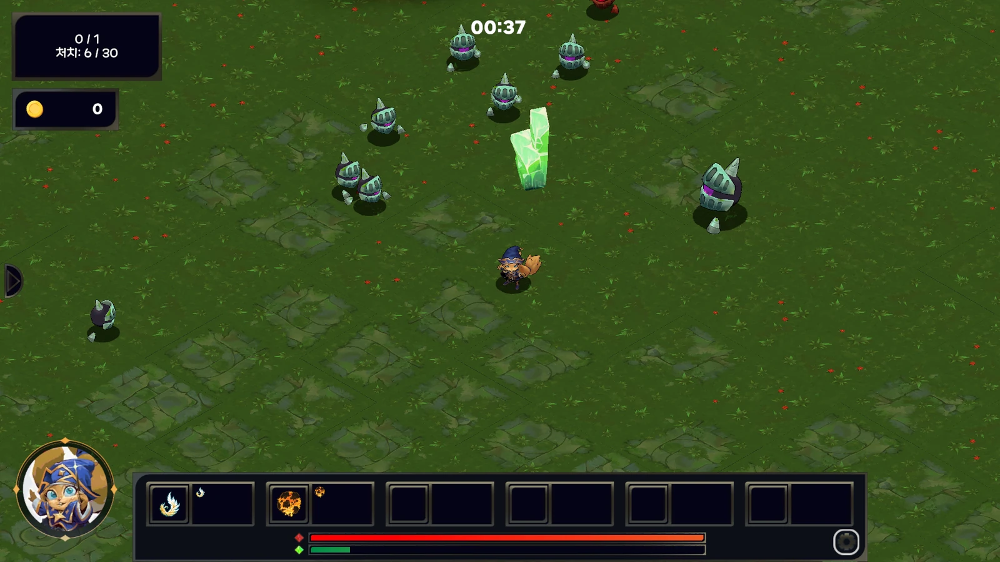
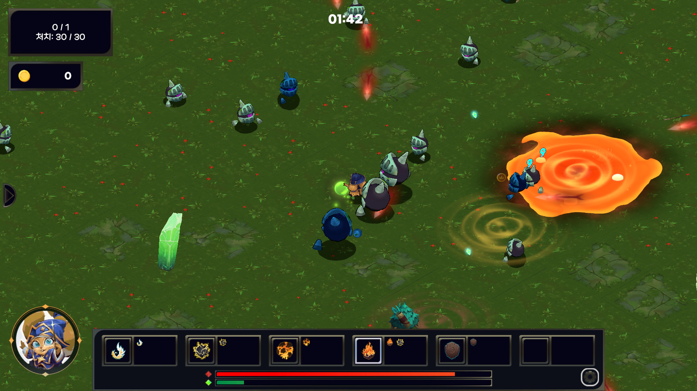

Runtime systems
TilemapGenerator, RenderingManager, SpiderQueenMovement, DataDigger 초기 구현과 반복 수정.
04 / Team Development
원소 스킬을 조합하며 몰려오는 적과 보스를 상대하는 3D top-down survivor.
초기 gameplay prototype을 제작하고, production 단계에서 환경 청크·보스 전투·전투 통계를 구현해 팀의 맵·애니메이션·스포너 시스템과 통합했습니다.
팀 프로젝트를 진행하며 개인 수정과 테스트에 사용한 저장소입니다. 현재 팀 프로젝트 버전과 차이가 있을 수 있습니다.

02 / GAME & TEAM
플레이어는 자동 발동 스킬로 적을 처치하고 경험치와 재화를 모아 원소·혼합 스킬을 성장시킨다. Timeline 기반 웨이브와 미션, 보스가 한 stage 흐름을 구성한다.
03 / MY ROLE
Git history와 현재 코드의 symbol ownership으로 확인 가능한 범위만 정리했다.
TilemapGenerator, RenderingManager, SpiderQueenMovement, DataDigger 초기 구현과 반복 수정.
보스 상태와 공격 타이밍, mixed skill 및 환경 관련 production fix를 팀 코드 위에서 조정.
맵·장애물 아트, animation events, enemy spawner, Stage1, 통계 service와 runtime 계약을 연결.
원본 아트·애니메이션 제작, 전체 gameplay architecture, 공식 리드 역할, 최종 성능 수치.
Production 전 핵심 구조 검증용 데모를 직접 구현했다는 개발자 확인. Git에는 b7592683의 명시적 작성자 기록과 9dfc1a83의 TestScene 작업이 남아 있다.
현재 코드와 Git history로 확인되는 환경 청크, 보스 전투 통합, DataDigger 작업을 production의 Primary Cases로 유지한다.
CURRENT CODE / COMMIT EVIDENCE RETAINEDEvidence boundary: 초기 데모는 이후 unused prototype 정리 커밋 6f87d384에서 관련 장면이 삭제됐다. 현재 production architecture 전체를 설계했거나 그 구조가 그대로 계승됐다고 주장하지 않는다.
04 / CASE 01 · ENVIRONMENT
2D tilemap과 obstacle data를 3D chunk로 생성하고, 플레이어 주변 3×3만 활성화했다. 적 스폰과 재배치도 같은 chunk coordinate를 공유하도록 경계를 만들었다.
ACTIVE CHUNK NEIGHBORHOOD
Evidence: 구현 이력과 제공된 runtime capture를 함께 제시하며 성능 수치는 측정하지 않았다. 상세 commit은 Technical Evidence에 보존했다.
05 / CASE 02 · BOSS COMBAT
팀원이 만든 공용 AnimatorEventProxy를 소비해 Spider Queen과 Forest Golem의 상태, 예고 범위, VFX, 실제 피해 타이밍을 연결했다.
PRODUCTION FIXES
공격 prefab과 line spawn 구조를 조정하고, Spider Queen movement state 문제를 수정했다. Forest Golem은 pooling된 death cleanup과 reward multiplier까지 연결했다.
Ownership boundary: 공용 event proxy와 원본 animation/art의 제작 소유권은 주장하지 않는다. 내가 구현·수정한 boss behavior와 그 연결만 다룬다.
06 / CASE 03 · TELEMETRY
DPS, 회복, 피격 피해와 스킬별 damage를 초 단위 CSV로 남기는 DataDigger를 만들었다. 이후 팀원이 Event Bus와 service interface 기반 통계 시스템으로 통합했다.
Handoff result: 최종 service architecture는 팀원 junjjang2의 통합 작업이다. 여기서는 prototype의 문제 정의, 수집 schema, 반복 개선과 인계 가능한 경계에 초점을 둔다. Evidence: 646개의 committed combat CSV log가 남아 있다.
07 / SMALL CASES
REQUEST-DRIVEN FIX
협업 중 제기된 요청을 enemy line spawn, attack prefab, Timeline 연동 수정으로 반영했다.
SCOPED FEATURE
혼합 스킬을 구현·수정했고, 불필요한 범위는 커밋에서 명시적으로 덜어내며 작업 경계를 관리했다.
08 / TEAM DEVELOPMENT
나의 기여가 팀의 입력을 어디서 받고, 어떤 계약을 제공하고, 누가 소비하는지 기준으로 정리했다.
09 / RESULT
초기 gameplay 검증에서 production 구현, 팀 시스템 통합과 telemetry handoff까지 서로 다른 단계의 책임을 맡았다.

Validation level: Recorded Runtime Capture + Static Analysis + Git Evidence. 영상은 제공된 실행 기록이며, 이 페이지 편집 과정에서 fresh Play Mode 재검증이나 성능 측정을 수행했다고 주장하지 않는다.
10 / TECHNICAL EVIDENCE
| Case | Primary symbols | Git evidence | Confidence / boundary |
|---|---|---|---|
| Environment | TilemapGeneratorRenderingManagerSpawnPointManagerEnemySpawner.CheckEnemyChunk | 4049784010af59ca, e4550b2b, be83c65b, feb400f6, ee3061dd, f898b0d6, 93a6a0c6 | High · static behavior confirmed; runtime performance not measured |
| Boss combat | SpiderQueenMovementForestGolemMovementAnimatorEventProxy | 130d6f01, 8c6e5c3a, c475f112, 72e63d6d, 3aa1bc2a | High · boss behavior/integration; proxy and source assets team-owned |
| Telemetry | DataDiggerIStatisticsServiceStatisticsCollectorStatisticsService | b80a3a8e, 342d59fa → teammate integration 04212bf8 | High · prototype owned; final service architecture teammate-owned |
| Project state | Unity 6000.0.59f2URP 17.0.4Input System 1.14.2 | Project settings and package manifest | Repository snapshot · no distributable build found |